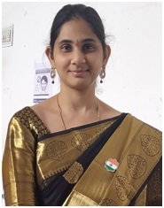

Mrs.G.Srujana
Lecturer
Department of Biotechnology
MJPTBCW RESIDENTIAL DEGREE COLLEGE FOR WOMEN
Teaching
BSc Biotechnology (2006-2009) at Ideal Degree College, OU
MSc Biotechnology (2009-2011) at Gitam University, Visakhapatnam.
Qualified CSIR-NET-LS in 2012
Worked as Project- JRF (2013-2015) at IICT on "miRNA signalling and drug targeting in cancers".
Worked as Project- -JRF (2011-2013) at CDFD on "Structural Characterization of Acyl Co-A binding proteins (ACBP) of Plasmodium falciparum.
Published 3 papers in peer reviewed journals
Was a team member of Poster Presentation at an International conference